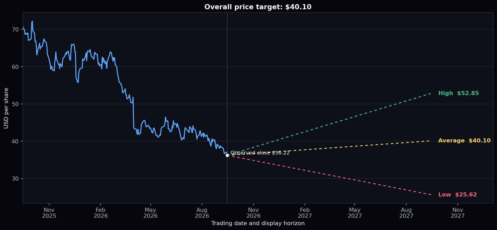
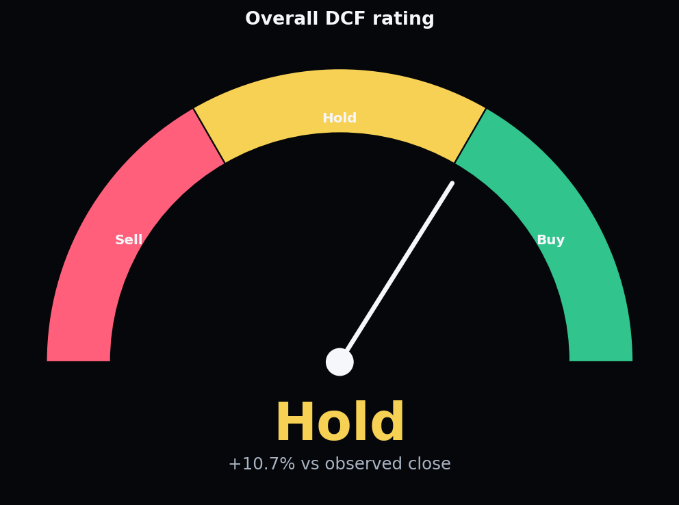
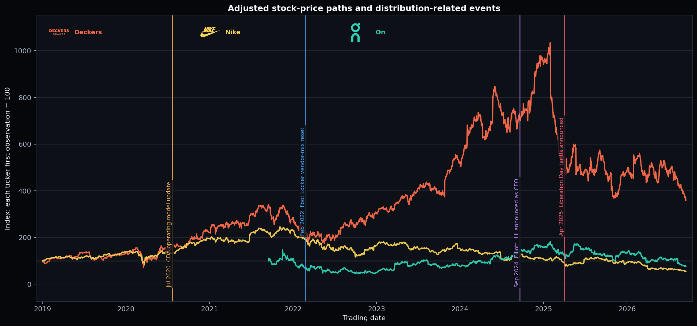

Consumer discretionary / footwear
NIKE, Inc.
A recovery valuation with little room for execution error.
Rating: Hold. The $40.10 base target offers 10.7% upside, below the 15% Buy threshold.
Core debate: The market needs evidence that product velocity and wholesale productivity can recover together.
Earnings driver: Margin repair matters more than aggressive revenue growth in the base case.
Primary risk: A broad wholesale rebuild could restore volume while weakening full-price economics.
Market and valuation
Price target range
BearBaseBull

Targets are sentiment-adjusted DCF outputs. The price path is intentionally not simulated in the dashboard.
Recommendation
Overall rating

Neutral
Valuation recognizes recovery, but the base case does not clear the required return hurdle.
Analyst view
The market already prices part of the turnaround. The debate is less about survival and more about the pace of margin repair, wholesale re-engagement, and sustainable running-product momentum.
02
Investment thesis
Three questions define the recommendation.
Can product velocity return?
Base revenue growth rebuilds from 2.0% in FY2027 to 3.5% in FY2029 before normalizing. That is a measured recovery, not a return to peak-category dominance.
Base case: gradual
Can scale become earnings again?
Operating margin is modeled at 9.0% in FY2027 and 12.0% by FY2031, still below FY2024's 12.3%. The valuation requires repair without assuming a new peak.
Evidence required
Can wholesale trust be rebuilt?
Competitors compounded into physical distribution while Nike emphasized direct channels. “Win Now” must improve shelf presence without recreating promotional inventory pressure.
Execution risk
| Debate | Evidence in the model | What changes the view | Current read |
|---|---|---|---|
| Top-line recovery | 2.0%–3.5% base growth through FY2031 | Running launches and wholesale sell-through | Unproven |
| Margin repair | 9.0% to 12.0% operating margin | Full-price mix, tariffs, product costs | Possible |
| Channel reset | Direct mix fell to 39.2% in FY2026 | Partner doors, allocation depth, inventory | Early |
| Valuation support | $40.10 base target; 10.7% upside | Lower WACC or stronger terminal economics | Balanced |
03
Valuation
Scenario DCF with a small, capped sentiment overlay.
Recommendation: Hold. The base target provides 10.7% upside, below the 15% Buy hurdle.
Base value: $40.10 per share at 8.76% WACC and 2.0% perpetual growth.
What breaks it: A sustained 7.5%–9.0% margin range produces the $25.62 bear case.
What changes it: A credible path to 14% FY2031 margin supports the $52.85 bull case.
Scenario decision table
| Case | Value | Key requirement | Investment read |
|---|---|---|---|
| Bear | $25.62 | 7.5%–9.0% operating margin persists | Turnaround fails to earn its cost of capital |
| Base | $40.10 | 12.0% FY2031 margin; 2.0% terminal growth | Recovery is recognized, but upside is insufficient for Buy |
| Bull | $52.85 | 14.0% FY2031 margin; 2.5% terminal growth | Requires sustained product and channel execution |
Terminal exposure73.8% of enterprise valueMost sensitive inputsWACC, terminal growth, marginSentiment overlay0.14%, capped and non-fundamental
Analyst view
Valuation is not saying Nike is cheap; it is saying the market already gives partial credit for a recovery. The missing proof is durable earnings quality: product-led demand, full-price sell-through, and a wholesale rebuild that does not add markdown risk.
04
Operating forecast
A conservative recovery path, shown explicitly.
Revenue: 2.8% FY2026–FY2031 CAGR; no return to historic category-growth assumptions.
Margin: 8.2% to 12.0%; recovery still ends below FY2024’s 12.3% operating margin.
Cash flow: FCFF reaches $4.79B in FY2031, with execution relying on normalized working capital.
Disconfirming signal: Higher wholesale volume with falling gross margin would weaken the forecast quality.
Base-case operating bridge
| FY2026A | FY2027E | FY2028E | FY2029E | FY2030E | FY2031E | |
|---|---|---|---|---|---|---|
| Revenue | 46.40 | 47.33 | 48.75 | 50.45 | 51.97 | 53.26 |
| Growth | 0.2% | 2.0% | 3.0% | 3.5% | 3.0% | 2.5% |
| Operating margin | 8.2% | 9.0% | 10.0% | 11.0% | 11.5% | 12.0% |
| NOPAT | 3.03 | 3.32 | 3.80 | 4.33 | 4.66 | 4.99 |
| FCFF | 2.02 | 3.17 | 3.59 | 4.08 | 4.44 | 4.79 |
Margin repair+380 bps from FY2026Revenue growthPeaks at 3.5% in FY2029Cash conversionFCFF grows faster than revenue
Analyst view
The model asks for 382 basis points of operating-margin recovery by FY2031 while revenue grows only 2.8% annually. Margin execution is therefore the primary earnings lever and the clearest source of forecast risk.
05
CDA case study
How competitors captured wholesale growth while Nike prioritized Direct.
FY2021–FY2024 wholesale evidence
Competitors compounded through the channel Nike de-emphasized
Nike’s Consumer Direct Acceleration increased owned-channel emphasis. Public filings show a sharp divergence in reported wholesale growth after FY2021, alongside retailer diversification.
Deckers+178%40.6% CAGR
On+206%45.3% CAGR
Nike+7.2%2.3% CAGR
01 / Strategic moveDirect mix +12.1 pts
Nike Direct share rose from 31.6% in FY2019 to 43.8% in FY2023.
02 / Retail responseFoot Locker −16 pts
Nike’s share of Foot Locker merchandise purchases fell from 75% in 2020 to 59% in 2024.
03 / Competitor capture40%–45% CAGR
Deckers and On expanded reported wholesale revenue far faster than Nike from FY2021 to FY2024.
04 / Recovery signalDirect mix −4.5 pts
Nike Direct share reset from its FY2023 peak to 39.2% in FY2026 as wholesale returned to focus.
Competitor capture: FY2021–FY2024
| Company | Wholesale growth | Wholesale CAGR | Research interpretation |
|---|---|---|---|
| Deckers | +178% | 40.6% | Specialty-running distribution grew rapidly while Nike de-emphasized the channel. |
| On | +206% | 45.3% | Strong wholesale expansion is consistent with new-door and category momentum. |
| Nike | +7.2% | 2.3% | Wholesale grew far more slowly through the same comparison period. |
Evidence strengthClear divergence in disclosed channel growthWhat it does not proveA one-for-one transfer of Nike salesOther driversInnovation, category growth, and fiscal calendars
Analyst view
Deckers and On did not merely grow alongside Nike: their disclosed wholesale revenue grew 40%–45% annually from FY2021 to FY2024 while Nike grew 2.3%. This is strong evidence of channel opportunity being available to competitors, but it remains correlation rather than a measured transfer of Nike demand.
Marketplace reset: what changed
| Indicator | Then | Now | Research interpretation |
|---|---|---|---|
| Nike Direct share | 31.6% FY2019 | 43.8% FY2023 peak | Consumer Direct Acceleration materially increased owned-channel mix. |
| Nike Direct share | 43.8% FY2023 peak | 39.2% FY2026 | Mix reset signals the wholesale rebuild; it does not yet prove door productivity. |
| Foot Locker Nike purchase share | 75% in 2020 | 59% in 2024 | Retailer diversification created space for alternative performance brands. |
| Nike wholesale revenue | $25.9B FY2025 | $27.5B FY2026 | Early recovery is visible, but must be tested against full-price sell-through. |
Retail evidenceFoot Locker concentration fell 16 pointsRecovery testGrowth with stable gross margin and inventoryKey monitorProductive doors and independent sell-through
Analyst view
Nike’s Direct mix has already fallen from its FY2023 peak, while FY2026 wholesale revenue increased 6.1%. The next proof point is quality: sales must grow through productive doors without a new round of inventory pressure or gross-margin erosion.
Strategic timeline
Decisions, disruption, response
Consumer Direct Acceleration
Nike prioritizes owned digital, direct channels, and selected strategic partners.
Foot Locker diversifies
The retailer says Nike will represent a lower share of merchandise purchases.
Elliott Hill returns
Leadership shifts toward marketplace restoration and product-led growth.
“Liberation Day” tariffs
Import-cost pressure raises the hurdle for gross-margin recovery.
Win Now priorities
Running and wholesale relationships move to the front of the reset.

The price paths show market context around the strategic milestones. They are descriptive: the data do not establish that any event caused a specific price move.
What to watch
Track wholesale growth together with gross margin and inventory. Wholesale acceleration is constructive only if it reflects productive doors and sell-through rather than broader distribution followed by markdowns.
06
Risks & catalysts
The signposts that can move the price target.
Downside Key risks
Margin recovery stalls
Promotions, tariffs, and elevated product costs keep operating margin below the modeled path.
Wholesale rebuild dilutes brand
Distribution expands faster than full-price demand, recreating excess inventory.
Running innovation lags
Deckers and On retain specialty-door momentum and shelf productivity.
Terminal assumptions compress
A 9.76% WACC and 1.0% terminal growth imply roughly $34.24 per share.
Upside Catalysts
Running sell-through inflects
New franchises improve full-price velocity across specialty and key accounts.
Gross margin absorbs tariffs
Pricing, sourcing, and freight productivity support faster EBIT recovery.
Partner doors deepen
Better assortments and allocations rebuild wholesale without channel conflict.
Cash conversion normalizes
Inventory and receivables discipline release working capital into FCFF.
Quarterly monitorRevenue growthLeading demand signal
Quarterly monitorGross marginPricing and tariff read-through
Quarterly monitorInventory growthPromotion risk
Annual monitorWholesale mixMarketplace restoration
07
Sources & methodology
Primary sources first; dates and limitations are explicit.
Filings & financial data
SEC EDGARNike, Deckers, On Holding, Foot Locker filings sec2mdSEC filing-to-Markdown conversion Yahoo Finance chart APINKE, DECK and ONON adjusted closeValuation inputs
U.S. Treasury15 Sep 2026 nominal 10-year yield DamodaranImplied equity risk premium Damodaran industry dataShoe-industry unlevered betaStrategy & channel evidence
Nike CDA announcementJune 2020 direct-channel strategy Foot Locker FY2021 resultsVendor diversification disclosure Running Industry AssociationSpecialty-running channel contextEvents & current framework
Nike leadership announcementElliott Hill appointment White House tariff announcement2 Apr 2025 event marker Nike FY2026 resultsLatest reported operating contextMethodology: DCF values are derived from unlevered free cash flow, scenario-specific WACC and perpetual-growth assumptions. News sentiment applies only a 0.14% capped adjustment after fundamental valuation; it does not change operating forecasts.
Limitations: This is an educational research dashboard, not investment advice. Company fiscal years differ. Indexed channel charts compare growth rates and do not imply equal revenue scale. Data cut-off is 15 Sep 2026.